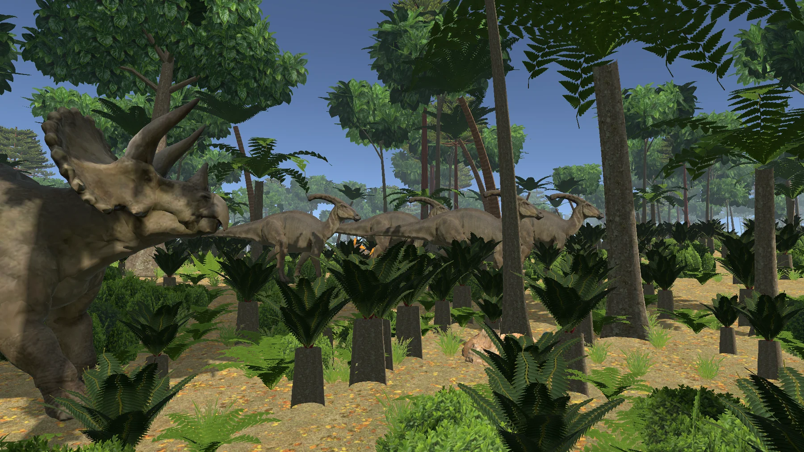

01 / FAUNA
Conviví con lo
indomable.
Observación, domesticación pacífica o por desmayo, monturas y cría.
INCLUIDO EN BUILD 0.6Sobreviví. Explorá. Dejá tu historia.
Un sandbox de supervivencia donde criaturas antiguas, asentamientos humanos y un mundo en constante cambio escriben su propia historia. Un proyecto independiente que sigue creciendo.
Entre bosques, costas y ruinas olvidadas, cada excursión puede convertirse en un descubrimiento o en un peligro. La fauna responde a su temperamento; las personas tienen sus propios intereses.
Veyrath busca combinar la tensión de la supervivencia con una historia que emerge de tus decisiones: aprender un oficio, construir un hogar, criar animales o formar tu propio asentamiento.

CAPTURA DE LA BUILD 0.6VE / 001Un primer vistazo al territorio de Veyrath. Explorá el mapa, ampliá sus regiones y descubrí los diferentes paisajes del continente.
Las notas de la versión 0.6 describen sistemas que se conectan entre sí. Estos son algunos de los pilares de Veyrath.
Observación, domesticación pacífica o por desmayo, monturas y cría.
INCLUIDO EN BUILD 0.6Clima, necesidades básicas, alimentación, lesiones y curación.
INCLUIDO EN BUILD 0.6Refugios, herramientas, ingeniería, herrería y agricultura.
INCLUIDO EN BUILD 0.6NPC, asentamientos, diplomacia y diez civilizaciones dinámicas.
INCLUIDO EN BUILD 0.6Una mirada al estado documentado de la versión de prueba y a los sistemas que todavía necesitan trabajo.
Estados basados en el archivo LEEME.txt incluido en Veyrath 0.6 y en los planes del proyecto. "Incluido" significa documentado en esa build, no que haya sido probado independientemente en todas las situaciones.
Un mundo para perderse.
Una historia para crear.
Explorá los 183 modelos de criaturas que, según su desarrollador, ya forman parte de Veyrath. Cada ficha permite abrir una vista 3D giratoria del modelo real, extraída de sus archivos FBX.
* Catálogo basado en los 183 FBX entregados; la integración en el juego fue confirmada por su creador. Los grupos son descriptivos. Las vistas 3D son estáticas, no reproducen las animaciones del juego y algunos modelos se muestran con un material neutro porque no traen la textura integrada.
Imágenes capturadas del juego. Criaturas, paisajes y construcciones reales de su desarrollo.
* Capturas de desarrollo. El aspecto final y las características pueden cambiar.
Veyrath todavía está en desarrollo. Consultá el canal oficial para conocer la disponibilidad de sus builds y las notas antes de jugar.
Un mundo de supervivencia con dinosaurios, asentamientos y exploración. Esta versión de referencia está destinada a pruebas; puede presentar errores y problemas de rendimiento.
VISITAR LA PÁGINA DE ITCH.IOLa descarga y su disponibilidad se gestionan desde Itch.io; esta web no aloja el ejecutable.
* Medición indicada en el LEEME.txt de la build 0.6. No equivale a requisitos mínimos garantizados.
Una guía compacta basada en el archivo LEEME.txt de la build 0.6. Los controles se pueden cambiar desde Opciones.
Notas y novedades de Veyrath. Estas primeras entradas resumen el contenido documentado en la versión 0.6.
Respuestas rápidas sobre el estado actual del proyecto, sus recursos y cómo colaborar con el desarrollo.
No. Es un proyecto en desarrollo. La build 0.6 es una versión de prueba; sus sistemas, contenido y rendimiento pueden cambiar.
Sí, su desarrollador confirmó que los modelos del catálogo ya están incorporados al juego. La web presenta una vista 3D estática de cada modelo; esto no implica que todas las mecánicas o animaciones sean iguales para todas las especies.
Consultá la página oficial de Veyrath en Itch.io para conocer las versiones públicas disponibles.
Las notas de la build 0.6 incluyen multijugador experimental por red local. La sincronización de NPC, domesticación y fauna tiene limitaciones conocidas.
Unite al Discord de Veyrath para compartir sugerencias, comentar novedades y reportar problemas.
Seguí los avances, explorá las actualizaciones y acompañá el desarrollo de Veyrath desde sus primeras versiones.
Visita los canales oficiales para seguir las nuevas versiones. El enlace de Itch.io puede ofrecer descargas según el estado de publicación.